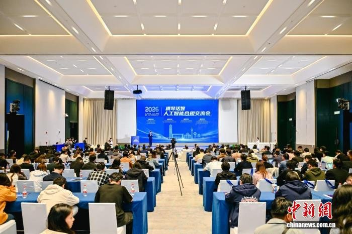

新闻 · 2026-11-25 12:00
内地和澳门政产学研用代表齐聚横琴 共话人工智能合规发展
中新网报道，24日下午，“横琴话智·人工智能合规交流会”在横琴粤澳深度合作区举行，内地和澳门近200名政产学研用代表参加。合作区执委会副主任李翀表示，合作区兼具“澳门+横琴”开放优势和“基建+政策+生态+场景”叠加条件。现场发布了《人工智能合规评估研究报告》，“澳琴人工智能和数据科学人才高地”启动建设，10家企业代表签署《人工智能行业自律宣言》，承诺遵循安全可信、依法合规等十项原则。

来源与核验
单一信源报道，未交叉核实